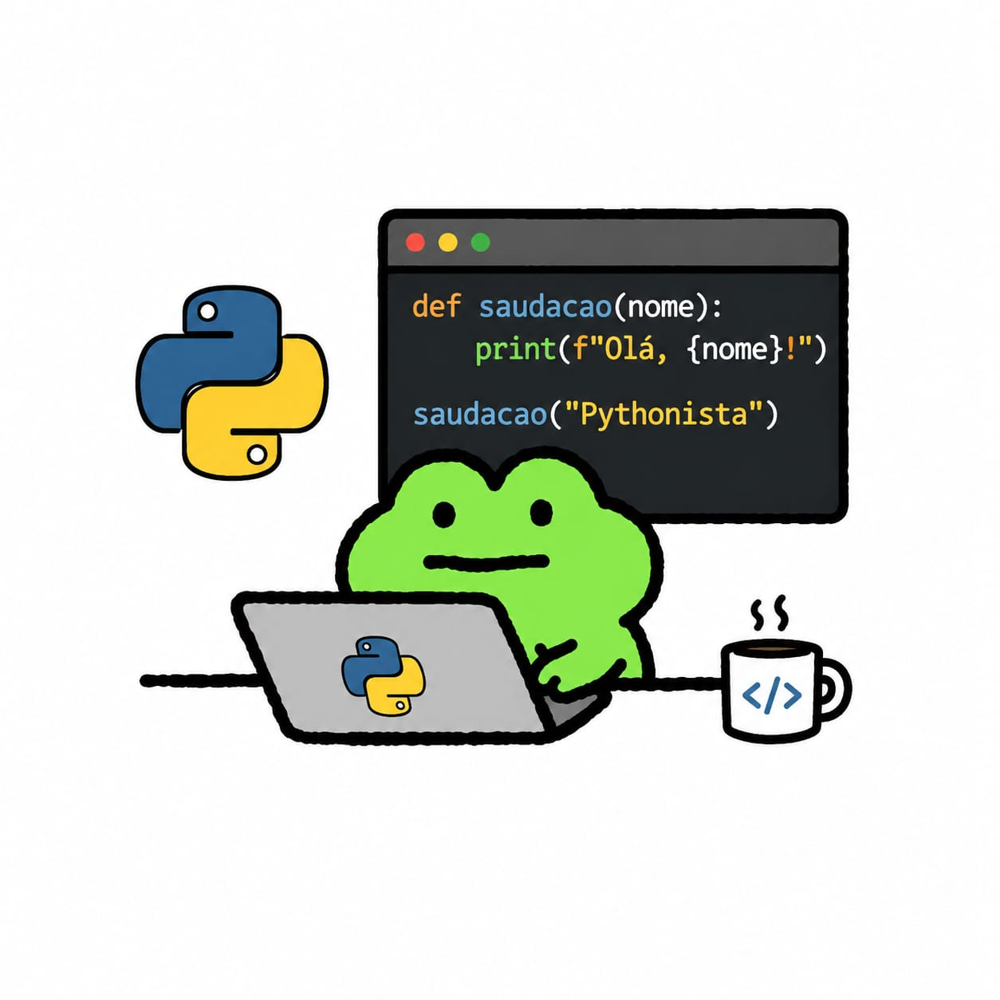

Tecnologia

Programação Web
Eu sou iniciante na área da Programação Web, um campo que tenho aprendido aos poucos e que vem despertando muito meu interesse. Gosto de descobrir como sites são criados, aprender sobre códigos e entender como diferentes elementos funcionam juntos para formar páginas e sistemas. Mesmo estando no começo, considero essa área muito interessante, porque envolve criatividade, lógica e aprendizado constante. Durante esse processo, tenho a ajuda da minha professora Eliane, que me auxilia bastante nos estudos e no aprendizado. Suas explicações e orientações têm sido importantes para que eu consiga compreender melhor os conteúdos e evoluir cada vez mais. Aprender Programação Web tem sido uma experiência desafiadora, mas também muito divertida e motivadora para mim.

Inteligência Artificial
Um assunto que desperta muito meu interesse é a inteligência artificial, porque acho incrível como a tecnologia pode ser usada para criar sistemas capazes de aprender, responder perguntas, gerar conteúdos e auxiliar as pessoas em diferentes áreas. Gosto de conhecer mais sobre como as inteligências artificiais funcionam, observar suas possibilidades e acompanhar o crescimento dessa tecnologia, que está cada vez mais presente no mundo atual. A inteligência artificial é algo que me chama atenção principalmente pela criatividade e inovação envolvidas. Acho interessante como ela pode ajudar nos estudos, na programação, na comunicação e até mesmo na criação de imagens, textos e projetos. Além disso, gosto de explorar ferramentas tecnológicas e descobrir novas funcionalidades relacionadas à IA, porque considero essa uma das áreas mais interessantes e promissoras da tecnologia atualmente.

Python
Eu também estou aprendendo Python, uma linguagem de programação muito conhecida e utilizada em diferentes áreas da tecnologia. Apesar de ainda não me considerar muito boa nela, continuo tentando aprender aos poucos e melhorar minhas habilidades com prática e dedicação. Acho interessante como Python pode ser usado para criar programas, automatizar tarefas e desenvolver projetos variados, o que torna o aprendizado ainda mais importante e útil. Mesmo enfrentando algumas dificuldades às vezes, procuro continuar estudando e entendendo melhor os comandos e a lógica da programação. Para mim, aprender algo novo exige paciência e esforço, e cada pequena evolução já representa um avanço importante. Quero continuar aprimorando meus conhecimentos em Python e evoluir cada vez mais na área da programação.